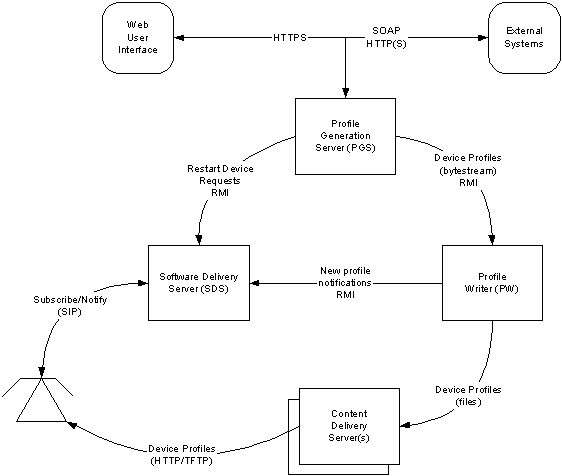
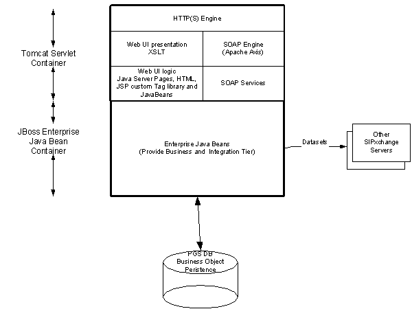

The purpose of this document is to give a high level description of the components and technologies that make up the Configuration Server.
The Configuration Server is a management tool designed to automate and simplify the provisioning and operation of a network of SIP phones. Pingtel (and other manufacturers) phones can be configured on an individual basis, however this is impractical for large installations.

Figure 1 - Configuration Server Context Diagram
The Configuration Server is composed of several processes or components. It was designed in this manner to improve robustness and to allow the different components to run on separate hosts to improve scalability.
Configuration Server Components below describes the main responsibilities of each component.

Figure 2 - PGS Component Design shows the layers that exist in the PGS. They can be thought of in terms of tiers. There are the presentation, business and integration and persistence tiers.
The presentation tier provides user interfaces which provide access to and displays views of the business objects in the PGS. The primary user interface is the Web UI. It allows administrators and end users to interact with the Configuration Server. End users typically use it to change the SIPxchange PIN, load applications onto their phones, add speed dials, etc. Administrators use the Web UI to create users, devices, configure settings for users and devices, send profiles to devices, startup and shut down the other SIPxchange servers, etc.
The Web UI can be split into two halves, the presentation and logic layers. The logic layer is responsible for forwarding users requests to the Enterprise JavaBeans (in the Business tier) and handling their responses. Most of this layer is implemented in a JSP custom tag library (see ?Javaserver Pages Tag Libraries? listed in the Other resources) to reduce JSP scriptlet code and to increase reusability.
The presentation of view half of the presentation tier is implemented in XSLT (see ?XSL Transformation (XSLT) version 1.0? listed in the Other resources). The XSLT engine takes XML generated by the custom tag library handlers and converts it to XHTML using our XSLT stylesheets. The XSLT layer provides three purposes. Firstly it provides a very precise demarcation of presentation and controller logic which allows us to modify the lower layers without affecting the presentation. Secondly it allows us the possibility of supporting other User Agents such as WAP by just supplying a second set of stylesheets.
Lastly we are able to re-use parts of the presentation logic by just using different stylesheets. An example of this is the end user call handling page and the administrator user details page use the same back-end logic but use different stylesheets.
The SOAP interface is provided to allow other system to perform operations on the PGS in much the same way that humans can use the Web UI. We use the Apache Axis SOAP engine to provide the transport functionality. SOAP service adaptor classes contain the logic to delegate the SOAP requests (such as creating or deleting a user) to the Enterprise JavaBeans. The service adaptor classes are typically very small (tens of lines), all of the processing is delegated to the business tier.
The heart of the PGS is the Enterprise JavaBeans (EJ Beans). They contain the main application logic. EJ Beans were selected for this purpose as they provide inbuilt thread synchronization, transaction management, object/relational persistence management and declarative security all of which are used extensively.
The JBoss EJB container was selected, as it is open source (Lesser GPL) and had an integrated Servlet container (Tomcat). There are three types of EJ Bean used in the business tier:
It is also worth mentioning that the EJ Bean spec allows us to use various vendors RDBMS implementations without code modification. The PGS originally used Oracle but we now use PostgreSQL, largely because it is open source and therefore license free.

Figure 3 - Profile Writer Design
The Profile Writer is a relatively simple process which takes requests from the PGS to store and delete profiles and informs the PPS when these events occur. Figure 3 - Profile Writer Design shows the basic design of the PW. Requests (remote method invocations) are received over RMI from the PGS. Currently only two methods are used, write and delete profile.
The main thread is responsible for handing incoming requests over RMI, it places Command (based on the Command pattern) objects on a queue for the worker thread to process. All synchronization between these threads is done on this queue. The worker thread is used to write/delete profiles and to send method calls over RMI to the PPS.
When the PW gets a request to write a profile it determines what type of device the profile belongs to (Pingtel or Cisco) and then uses this information to decide which CDS to put the profile on. The profile is sent as a byte stream via one of the method parameters. Using RMI enables us to put the PGS and PW on separate servers if required. Once the PW has written the profile to the appropriate CDS it informs the PPS (using RMI) that a new profile is available. For Pingtel devices the PPS will then send a SIP NOTIFY message to the device who this profile belongs to if that device has previously enrolled with the PPS. For Cisco devices the PPS sends a NOTIFY / check-sync message to the device and the device will reboot (which causes it to fetch the new profile from the TFTP CDS).
Figure 4 - Context Diagram shows the architecture of the ProfilePublisher. The main application logic is contained in the Java Code shown at the top. This code is responsible for:

Figure 5 - PPS Design shows more details of the Java Code shown in Figure 4 - PPS Context Diagram. The main thread handles remote method invocations from the Profile Writer, creating and en-queuing Command objects onto the command queue. The Profile Listener Worker thread de-queues these command objects from the command queue and executes them.
These command objects are based around notifying devices that they have new profiles or should restart. The command objects use the SIP stack via JNI to send SIP messages to devices. The command pattern provides extensibility so as new uses are found for the PPS new command classes can be added.
The Subscription Listener thread registers with the SIP stack for interest in SUBSCRIBE messages. When it receives those it creates or updates a subscription context in the PPS database. This subscription context is used extensively by the Command objects to find out where to send SIP messages. The RDBMS is used as the means of synchronization between the Profile Worker Listener (Command objects), Subscription Listener and Housekeeper threads.
The Housekeeper thread is used to reap expired enrollments from the PPS database. It wakes up periodically and deletes old records.
The CDS are off the shelf servers which the devices use to fetch their profiles. We currently support TFTP (used by the Cisco 79XX) and HTTP (used by the Pingtel phones).
Last modified: Wed Oct 6 15:34:20 EDT 2004